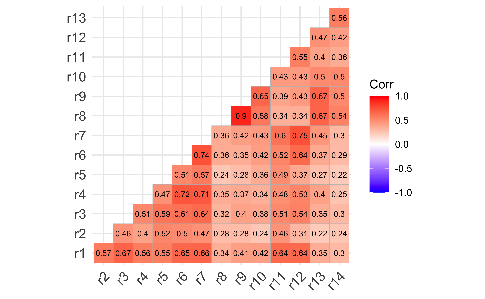

| Variável | Item | Fator |
|---|---|---|
| r1 | Eles têm conseguido mais do que merecem | Negação do preconceito |
| r2 | Eles recebem muito respeito e consideração | Negação do preconceito |
| r3 | Eles são muito exigentes em relação aos seus direitos | Negação do preconceito |
| r4 | A discriminação não é um problema do Brasil | Negação do preconceito |
| r5 | Eles têm muita influência política | Negação do preconceito |
| r6 | Eles não necessitam de ajuda, apenas devem se esforçar | Negação do preconceito |
| r7 | Eles devem superar o preconceito sem apoio como aconteceu com outros grupos | Negação do preconceito |
| r8 | Eles são mais habilidosos em trabalhos manuais | Afirmação das diferenças |
| r9 | Possuem maior habilidade culinária | Afirmação das diferenças |
| r10 | Estão em moda suas danças pela sensualidade que expressam | Afirmação das diferenças |
| r11 | Tem-se dada demasiada importância aos seus movimentos de protesto | Negação do preconceito |
| r12 | Parece pouco prudente dar importância as suas queixas | Negação do preconceito |
| r13 | Apresentam melhor desempenho em modalidades esportivas | Afirmação das diferenças |
| r14 | Possuem uma beleza diferente | Afirmação das diferenças |
Análise Fatorial Exploratória
Aplicação no R
Escala de Racismo Moderno
A Escala de Racismo Moderno foi desenvolvida por McConahay (1983) e adaptada para a Espanha por Navas (1998). Essa versão foi utilizada por Santos et al. (2006) para adaptar o instrumento ao Brasil, incorporando itens mais alinhados à cultura brasileira. A versão brasileira da escala é composta por 14 itens agrupados em dois fatores: negação do preconceito (ex.: “Eles têm conseguido mais do que merecem”) e afirmação de diferenças (ex.: “Eles são mais habilidosos em trabalhos manuais”). As pontuações variam de 1 (discordo totalmente) a 7 (concordo totalmente), onde pontuações mais altas indicam um nível mais elevado de racismo.
Escala de Racismo Moderno
Obtenção dos dados
Utilize o código abaixo para baixar o banco de dados e salvá-lo no objeto df
Uma olhada nos dados
| r1 | r2 | r3 | r4 | r5 | r6 | r7 | r8 | r9 | r10 | r11 | r12 | r13 | r14 | sexo | idade | renda_per_capta | cor_raca | estado_civil |
|---|---|---|---|---|---|---|---|---|---|---|---|---|---|---|---|---|---|---|
| 1 | 3 | 4 | 1 | 2 | 1 | 1 | 4 | 4 | 2 | 1 | 1 | 4 | 6 | Masculino | 19 | 326.67 | Parda | Solteiro(a) |
| 1 | 7 | 3 | 1 | 3 | 1 | 1 | 1 | 1 | 1 | 3 | 1 | 5 | 1 | Feminino | 20 | 500.00 | Parda | Solteiro(a) |
| 1 | 1 | 1 | 1 | 1 | 1 | 1 | 1 | 1 | 1 | 1 | 1 | 1 | 1 | Feminino | 58 | 2,800.00 | Branca | Solteiro(a) |
| 1 | 1 | 1 | 1 | 1 | 1 | 1 | 1 | 1 | 1 | 1 | 1 | 1 | 1 | Masculino | 21 | 2,000.00 | Parda | Solteiro(a) |
| 1 | 1 | 1 | 1 | 3 | 1 | 1 | 1 | 1 | 1 | 2 | 1 | 2 | 1 | Feminino | 18 | 144.67 | Branca | Solteiro(a) |
| 1 | 7 | 1 | 1 | 1 | 1 | 1 | 1 | 1 | 2 | 1 | 1 | 3 | 4 | Masculino | 19 | 2,000.00 | Branca | Solteiro(a) |
| 1 | 1 | 6 | 1 | 2 | 1 | 1 | 4 | 4 | 4 | 3 | 1 | 4 | 1 | Feminino | 23 | 200.00 | Parda | Solteiro(a) |
| 1 | 1 | 1 | 1 | 1 | 1 | 1 | 1 | 1 | 1 | 1 | 1 | 1 | 1 | Feminino | 19 | 2,200.00 | Branca | Solteiro(a) |
| 4 | 4 | 4 | 1 | 4 | 1 | 1 | 4 | 4 | 4 | 1 | 1 | 5 | 7 | Masculino | 36 | 540.00 | Parda | Casado(a) |
| 1 | 1 | 5 | 1 | 2 | 1 | 1 | 1 | 1 | 1 | 1 | 1 | 5 | 5 | Feminino | 19 | 300.00 | Amarela | Solteiro(a) |
Participantes
Participaram do estudo 320 estudantes universitários. A maior parte era do sexo feminino (54,7%) e se declarou como pardo (49,1%). A idade variou entre 18 e 58 anos (M = 21,74, DP = 4,8). Em relação ao estado civil, 97% afirmaram ser solteiros. A renda familiar per capita média foi de 959,23 (DP = 873,02)
Pacotes
Carregue os pacotes abaixo:
Inspeção de dados
(Data screening)
Manipulação dos dados
escala_de_racismo <- df |>
1 select(r1:r14)- 1
- Selecionar as variáveis da escala
Escala de resposta e valores ausentes
#> # A tibble: 14 × 5
#> Variável Minimo Máximo n Ausentes
#> <chr> <dbl> <dbl> <int> <int>
#> 1 r1 1 7 320 0
#> 2 r2 1 7 320 0
#> 3 r3 1 7 320 0
#> 4 r4 1 7 320 0
#> 5 r5 1 7 320 0
#> 6 r6 1 7 320 0
#> 7 r7 1 6 320 0
#> 8 r8 1 7 320 0
#> 9 r9 1 7 320 0
#> 10 r10 1 7 320 0
#> 11 r11 1 7 320 0
#> 12 r12 1 7 320 0
#> 13 r13 1 7 320 0
#> 14 r14 1 7 320 0Escala de resposta e valores ausentes (describe())
escala_de_racismo |>
describe()
#> vars n mean sd median trimmed mad min max range skew kurtosis se
#> r1 1 320 1.45 1.06 1 1.15 0.00 1 7 6 2.65 6.66 0.06
#> r2 2 320 2.19 1.52 2 1.89 1.48 1 7 6 1.66 2.46 0.09
#> r3 3 320 1.88 1.47 1 1.55 0.00 1 7 6 1.77 2.43 0.08
#> r4 4 320 1.30 1.10 1 1.00 0.00 1 7 6 4.22 17.60 0.06
#> r5 5 320 1.99 1.47 1 1.68 0.00 1 7 6 1.66 2.21 0.08
#> r6 6 320 1.39 1.01 1 1.11 0.00 1 7 6 2.98 8.85 0.06
#> r7 7 320 1.27 0.77 1 1.06 0.00 1 6 5 3.14 10.07 0.04
#> r8 8 320 1.62 1.14 1 1.36 0.00 1 7 6 1.90 3.25 0.06
#> r9 9 320 1.84 1.35 1 1.59 0.00 1 7 6 1.58 1.95 0.08
#> r10 10 320 2.00 1.46 1 1.72 0.00 1 7 6 1.46 1.40 0.08
#> r11 11 320 1.98 1.34 1 1.73 0.00 1 7 6 1.53 2.10 0.07
#> r12 12 320 1.32 0.94 1 1.07 0.00 1 7 6 3.84 16.27 0.05
#> r13 13 320 2.47 1.70 2 2.22 1.48 1 7 6 0.92 -0.13 0.09
#> r14 14 320 2.72 2.06 2 2.40 1.48 1 7 6 0.89 -0.56 0.12Respostas descuidadas
respostas_descuidadas <- longstring(escala_de_racismo, avg = T) |>
as_tibble() |>
mutate(
id = 1:n(), .before = 1
) |>
arrange(desc(longstr))
respostas_descuidadas
#> # A tibble: 320 × 3
#> id longstr avgstr
#> <int> <dbl> <dbl>
#> 1 2 14 14
#> 2 8 14 14
#> 3 11 14 14
#> 4 26 14 14
#> 5 39 14 14
#> 6 45 14 14
#> # ℹ 314 more rowscasos |>
print(n = Inf)
#> # A tibble: 43 × 15
#> id r1 r2 r3 r4 r5 r6 r7 r8 r9 r10 r11
#> <int> <dbl> <dbl> <dbl> <dbl> <dbl> <dbl> <dbl> <dbl> <dbl> <dbl> <dbl>
#> 1 2 1 1 1 1 1 1 1 1 1 1 1
#> 2 8 1 1 1 1 1 1 1 1 1 1 1
#> 3 11 1 1 1 1 1 1 1 1 1 1 1
#> 4 26 1 1 1 1 1 1 1 1 1 1 1
#> 5 39 1 1 1 1 1 1 1 1 1 1 1
#> 6 45 1 1 1 1 1 1 1 1 1 1 1
#> 7 62 1 1 1 1 1 1 1 1 1 1 1
#> 8 72 1 1 1 1 1 1 1 1 1 1 1
#> 9 78 1 1 1 1 1 1 1 1 1 1 1
#> 10 110 1 1 1 1 1 1 1 1 1 1 1
#> 11 117 1 1 1 1 1 1 1 1 1 1 1
#> 12 124 1 1 1 1 1 1 1 1 1 1 1
#> 13 133 1 1 1 1 1 1 1 1 1 1 1
#> 14 135 1 1 1 1 1 1 1 1 1 1 1
#> 15 138 1 1 1 1 1 1 1 1 1 1 1
#> 16 139 1 1 1 1 1 1 1 1 1 1 1
#> 17 140 1 1 1 1 1 1 1 1 1 1 1
#> 18 143 1 1 1 1 1 1 1 1 1 1 1
#> 19 144 1 1 1 1 1 1 1 1 1 1 1
#> 20 159 1 1 1 1 1 1 1 1 1 1 1
#> 21 188 1 1 1 1 1 1 1 1 1 1 1
#> 22 191 1 1 1 1 1 1 1 1 1 1 1
#> 23 195 1 1 1 1 1 1 1 1 1 1 1
#> 24 217 1 1 1 1 1 1 1 1 1 1 1
#> 25 218 1 1 1 1 1 1 1 1 1 1 1
#> 26 221 1 1 1 1 1 1 1 1 1 1 1
#> 27 224 1 1 1 1 1 1 1 1 1 1 1
#> 28 236 1 1 1 1 1 1 1 1 1 1 1
#> 29 243 1 1 1 1 1 1 1 1 1 1 1
#> 30 244 1 1 1 1 1 1 1 1 1 1 1
#> 31 252 1 1 1 1 1 1 1 1 1 1 1
#> 32 257 1 1 1 1 1 1 1 1 1 1 1
#> 33 267 1 1 1 1 1 1 1 1 1 1 1
#> 34 272 1 1 1 1 1 1 1 1 1 1 1
#> 35 280 1 1 1 1 1 1 1 1 1 1 1
#> 36 281 1 1 1 1 1 1 1 1 1 1 1
#> 37 282 1 1 1 1 1 1 1 1 1 1 1
#> 38 290 1 1 1 1 1 1 1 1 1 1 1
#> 39 295 1 1 1 1 1 1 1 1 1 1 1
#> 40 296 1 1 1 1 1 1 1 1 1 1 1
#> 41 298 1 1 1 1 1 1 1 1 1 1 1
#> 42 306 1 1 1 1 1 1 1 1 1 1 1
#> 43 309 1 1 1 1 1 1 1 1 1 1 1
#> # ℹ 3 more variables: r12 <dbl>, r13 <dbl>, r14 <dbl>Avaliação preliminar
Normalidade dos dados
resultado_normalidade$Descriptives |>
as_tibble() |>
print(n = Inf)
#> # A tibble: 14 × 10
#> n Mean Std.Dev Median Min Max `25th` `75th` Skew Kurtosis
#> <int> <dbl> <dbl> <dbl> <dbl> <dbl> <dbl> <dbl> <dbl> <dbl>
#> 1 320 1.45 1.06 1 1 7 1 1 2.65 6.66
#> 2 320 2.19 1.52 2 1 7 1 3 1.66 2.46
#> 3 320 1.88 1.47 1 1 7 1 2 1.77 2.43
#> 4 320 1.30 1.10 1 1 7 1 1 4.22 17.6
#> 5 320 1.99 1.47 1 1 7 1 3 1.66 2.21
#> 6 320 1.39 1.01 1 1 7 1 1 2.98 8.85
#> 7 320 1.27 0.767 1 1 6 1 1 3.14 10.1
#> 8 320 1.62 1.14 1 1 7 1 2 1.90 3.25
#> 9 320 1.84 1.35 1 1 7 1 2 1.58 1.95
#> 10 320 2.00 1.46 1 1 7 1 3 1.46 1.40
#> 11 320 1.98 1.34 1 1 7 1 3 1.53 2.10
#> 12 320 1.32 0.943 1 1 7 1 1 3.84 16.3
#> 13 320 2.47 1.70 2 1 7 1 4 0.923 -0.134
#> 14 320 2.72 2.06 2 1 7 1 4 0.888 -0.562resultado_normalidade$univariateNormality
#> Test Variable Statistic p value Normality
#> 1 Shapiro-Wilk r1 0.4894 <0.001 NO
#> 2 Shapiro-Wilk r2 0.7521 <0.001 NO
#> 3 Shapiro-Wilk r3 0.6562 <0.001 NO
#> 4 Shapiro-Wilk r4 0.2950 <0.001 NO
#> 5 Shapiro-Wilk r5 0.7143 <0.001 NO
#> 6 Shapiro-Wilk r6 0.4516 <0.001 NO
#> 7 Shapiro-Wilk r7 0.4118 <0.001 NO
#> 8 Shapiro-Wilk r8 0.5970 <0.001 NO
#> 9 Shapiro-Wilk r9 0.6626 <0.001 NO
#> 10 Shapiro-Wilk r10 0.7198 <0.001 NO
#> 11 Shapiro-Wilk r11 0.7504 <0.001 NO
#> 12 Shapiro-Wilk r12 0.3915 <0.001 NO
#> 13 Shapiro-Wilk r13 0.8153 <0.001 NO
#> 14 Shapiro-Wilk r14 0.7859 <0.001 NOCorrelação entre os itens
Correlação entre os itens

Fatorabilidade da Matriz de Dados
escala_de_racismo |>
polychoric.matrix() |>
KMO()
#> Kaiser-Meyer-Olkin factor adequacy
#> Call: KMO(r = polychoric.matrix(escala_de_racismo))
#> Overall MSA = 0.88
#> MSA for each item =
#> r1 r2 r3 r4 r5 r6 r7 r8 r9 r10 r11 r12 r13 r14
#> 0.92 0.89 0.93 0.91 0.92 0.89 0.90 0.77 0.77 0.91 0.96 0.85 0.95 0.85Retenção de fatores
Análise paralela
analise_paralela <- escala_de_racismo |>
polychoric.matrix() |>
fa.parallel(
n.obs = 322, fm = "pa",
plot = F
)
#> Parallel analysis suggests that the number of factors = 3 and the number of components = 2
analise_paralela
#> Call: fa.parallel(x = polychoric.matrix(escala_de_racismo), n.obs = 322,
#> fm = "pa", plot = F)
#> Parallel analysis suggests that the number of factors = 3 and the number of components = 2
#>
#> Eigen Values of
#>
#> eigen values of factors
#> [1] 6.54 1.38 0.31 0.15 0.00 -0.03 -0.07 -0.08 -0.13 -0.19 -0.24 -0.26
#> [13] -0.34 -0.51
#>
#> eigen values of simulated factors
#> [1] 0.49 0.31 0.24 0.18 0.12 0.08 0.03 -0.01 -0.05 -0.09 -0.13 -0.17
#> [13] -0.22 -0.29
#>
#> eigen values of components
#> [1] 7.05 1.96 0.85 0.68 0.59 0.52 0.48 0.47 0.36 0.30 0.27 0.24 0.16 0.08
#>
#> eigen values of simulated components
#> [1] 1.37 1.29 1.22 1.16 1.09 1.05 1.00 0.96 0.92 0.88 0.84 0.79 0.74 0.68Análise paralela
#> # A tibble: 14 × 2
#> `Autovalores para os daos reais` `Autovalores para os dados simulados`
#> <dbl> <dbl>
#> 1 6.54 0.493
#> 2 1.38 0.307
#> 3 0.312 0.244
#> 4 0.152 0.175
#> 5 0.00239 0.123
#> 6 -0.0308 0.0792
#> 7 -0.0688 0.0348
#> 8 -0.0834 -0.00786
#> 9 -0.125 -0.0490
#> 10 -0.191 -0.0909
#> 11 -0.243 -0.132
#> 12 -0.260 -0.173
#> 13 -0.336 -0.216
#> 14 -0.510 -0.295MAP
escala_de_racismo |>
polychoric.matrix() |>
vss(n.obs = 322, plot = F)
#>
#> Very Simple Structure
#> Call: vss(x = polychoric.matrix(escala_de_racismo), n.obs = 322, plot = F)
#> VSS complexity 1 achieves a maximimum of 0.88 with 1 factors
#> VSS complexity 2 achieves a maximimum of 0.95 with 2 factors
#>
#> The Velicer MAP achieves a minimum of 0.03 with 2 factors
#> BIC achieves a minimum of -87.36 with 5 factors
#> Sample Size adjusted BIC achieves a minimum of -1.04 with 8 factors
#>
#> Statistics by number of factors
#> vss1 vss2 map dof chisq prob sqresid fit RMSEA BIC SABIC complex
#> 1 0.88 0.00 0.062 77 1086 8.1e-178 6.8 0.88 0.202 641 885.2 1.0
#> 2 0.73 0.95 0.034 64 394 6.1e-49 3.0 0.95 0.126 24 227.2 1.2
#> 3 0.49 0.86 0.040 52 274 6.7e-32 2.4 0.96 0.115 -26 138.6 1.7
#> 4 0.45 0.76 0.047 41 168 2.7e-17 2.0 0.96 0.098 -69 61.2 1.8
#> 5 0.49 0.76 0.064 31 92 6.6e-08 1.7 0.97 0.078 -87 11.0 1.9
#> 6 0.38 0.69 0.078 22 62 9.8e-06 1.4 0.98 0.075 -65 5.1 2.2
#> 7 0.35 0.66 0.106 14 40 2.8e-04 1.2 0.98 0.076 -41 3.3 2.3
#> 8 0.33 0.62 0.151 7 17 1.6e-02 1.0 0.98 0.067 -23 -1.0 2.3
#> eChisq SRMR eCRMS eBIC
#> 1 835.6 0.1194 0.130 391
#> 2 118.0 0.0449 0.054 -252
#> 3 62.8 0.0327 0.043 -237
#> 4 32.1 0.0234 0.035 -205
#> 5 18.4 0.0177 0.030 -161
#> 6 9.3 0.0126 0.026 -118
#> 7 5.2 0.0094 0.024 -76
#> 8 2.0 0.0059 0.021 -38Estimadores JASP
Minimum Residual (Mínimos Resíduos)
- O que faz: Também conhecido como ULS (Unweighted Least Squares), minimiza a soma dos quadrados dos resíduos entre a matriz observada e a matriz modelada, sem ponderar os elementos.
- Quando usar:
- Dados contínuos ou ordinais com violação de normalidade.
- Amostras pequenas (é menos exigente que ML).
- Suposições: Não assume normalidade, mas requer homocedasticidade.
- Comparação com lavaan: Equivalente ao
estimator = "ULS"no lavaan.
Maximum Likelihood (Máxima Verossimilhança)
- O que faz: Estima parâmetros que maximizam a probabilidade dos dados observados, assumindo normalidade multivariada.
- Quando usar:
- Dados contínuos e normais.
- Quando se deseja testes de ajuste (ex.: χ²) e intervalos de confiança.
- Suposições: Normalidade multivariada e tamanho amostral adequado (n > 200).
- Comparação com lavaan: Equivalente ao
estimator = "ML". No JASP, não há variantes robustas por padrão.
Principal Axis Factoring (PAF - Fatoração por Eixos Principais)
- O que faz: Método de extração que estima comunalidades (variância compartilhada entre variáveis) iterativamente, usando correlações parciais.
- Quando usar:
- Dados não normais.
- Quando o objetivo é identificar a estrutura latente sem assumir normalidade.
- Suposições: Não assume normalidade, mas requer que as comunalidades sejam razoavelmente altas.
- Diferença do PCA: O PAF é um método de análise fatorial (modela variância comum), enquanto o PCA é uma técnica de redução de dados (modela variância total).
Ordinary Least Squares (Mínimos Quadrados Ordinários - OLS)
- O que faz: Similar ao Minimum Residual, mas focado em minimizar resíduos sem ajustes. Não confundir com regressão OLS.
- Quando usar: Casos simples onde a prioridade é simplicidade computacional.
- Suposições: Mesmas do Minimum Residual.
- Comparação com lavaan: Praticamente idêntico ao
estimator = "ULS".
Weighted Least Squares (WLS - Mínimos Quadrados Ponderados)
- O que faz: Pondera os resíduos pela inversa da matriz de covariância assintótica. Adequado para dados ordinais.
- Quando usar:
- Dados ordinais (ex.: escalas Likert).
- Quando há não normalidade extrema.
- Suposições: Requer amostras grandes (n > 1.000) para estabilidade.
- Comparação com lavaan: Equivalente ao
estimator = "WLSMV"se combinado com correções robustas.
Generalized Least Squares (GLS - Mínimos Quadrados Generalizados)
- O que faz: Versão generalizada do OLS que pondera os resíduos pela matriz de covariância residual.
- Quando usar: Dados contínuos com heterocedasticidade conhecida.
- Suposições: Normalidade e matriz de covariância bem especificada.
- Comparação com lavaan: Similar ao
estimator = "GLS".
Minimum Chi-Square (Mínimo Qui-Quadrado)
- O que faz: Minimiza a discrepância do qui-quadrado entre a matriz observada e a modelada.
- Quando usar:
- Dados categóricos (ex.: tabelas de contingência).
- Quando se busca compatibilidade com métodos de triagem de modelos.
- Suposições: Tabelas de contingência bem preenchidas (frequências > 5).
Minimum Rank (Mínimo Posto)
- O que faz: Método que minimiza o posto (rank) da matriz de covariância residual, buscando a estrutura mais parcimoniosa.
- Quando usar:
- Para explorar o número mínimo de fatores necessários.
- Em dados com alta colinearidade.
- Suposições: Adequado para dados de alta dimensionalidade.
Tabela Comparativa: Quando Usar Cada Estimador no JASP
| Estimador | Dados Contínuos | Dados Ordinais | Normalidade | Amostra Pequena | Uso Típico |
|---|---|---|---|---|---|
| Minimum Residual | Sim | Sim | Não requer | Sim | Dados não normais ou pequenas amostras |
| Maximum Likelihood | Sim | Não | Requer | Não (n > 200) | Dados normais com teste de ajuste |
| Principal Axis Factoring | Sim | Sim | Não requer | Sim | Exploração de estrutura latente |
| Weighted Least Squares | Não | Sim | Não requer | Não (n > 1.000) | Dados ordinais ou não normais |
| Generalized LS | Sim | Não | Requer | Não | Dados contínuos com heterocedasticidade |
| Minimum Chi-Square | Não | Sim (categóricos) | Não requer | Não | Tabelas de contingência |
| Minimum Rank | Sim | Sim | Não requer | Sim | Redução de dimensionalidade |
Exemplo Prático no JASP
- Dados normais e contínuos:
- Escolha Maximum Likelihood para obter testes de ajuste e cargas fatoriais precisas.
- Dados ordinais (Likert):
- Use Weighted Least Squares (WLS) ou Principal Axis Factoring (PAF).
- Amostra pequena e não normal:
- Prefira Minimum Residual ou Minimum Rank.
Estimadores lavaan: básicos
a) ML (Maximum Likelihood)
- Funcionamento: Baseia-se na maximização da função de verossimilhança para estimar parâmetros. Assume normalidade multivariada.
- Vantagens:
- Eficiente para grandes amostras e dados normais.
- Suporta dados incompletos via Full Information Maximum Likelihood (FIML).
- Limitações:
- Sensível a violações de normalidade (viés nos erros padrão e teste de ajuste χ²).
- Requer grandes amostras para estabilidade.
b) GLS (Generalized Least Squares)
- Funcionamento: Minimiza a diferença entre a matriz de covariância observada e a modelada, ponderando pelos resíduos.
- Uso Ideal: Dados contínuos e normais, mas com heterocedasticidade conhecida.
- Limitação: Não funciona com dados ordinais ou incompletos.
c) WLS/DWLS/ULS
- WLS (Weighted Least Squares): Usa toda a matriz de peso (inversa da matriz de covariância assintótica). Adequado para dados ordinais, mas exige amostras grandes (n > 1.000) para estabilidade.
- DWLS (Diagonally Weighted LS): Usa apenas a diagonal da matriz de peso. Mais estável que WLS para amostras menores (n > 200).
- ULS (Unweighted LS): Não usa ponderação. Rápido, mas menos preciso.
- Recomendação:
- Para dados ordinais (ex.: escalas Likert), DWLS ou WLSMV (variante robusta) são preferidos (Li, 2016).
Estimadores lavaan: robustos
a) MLM, MLR, MLMV (Robust ML)
- MLM (Satorra-Bentler):
- Correção: Ajusta o teste χ² e os erros padrão usando a correção de escala de Satorra-Bentler.
- Uso: Dados contínuos não normais e completos.
- Exemplo: Se a curtose for moderada, o MLM reduz falsos positivos no teste de ajuste.
- MLR (Yuan-Bentler):
- Correção: Combina erros padrão robustos (Huber-White) e teste χ² escalonado (Yuan-Bentler).
- Vantagem: Funciona com dados incompletos (FIML robusto).
- Recomendação: Padrão para dados contínuos não normais com missing values (Enders, 2010).
- MLMV e MLMVS: Ajustam média e variância do teste χ². Úteis para amostras pequenas (< 200), onde MLM pode ser conservativo.
b) WLSMV (Robust DWLS)
- Funcionamento:
- Usa a diagonal da matriz de peso para estimação (DWLS).
- Usa a matriz completa para corrigir erros padrão e estatísticas de teste.
- Vantagens:
- Adequado para dados ordinais e pequenas amostras (n > 100).
- Menos sensível a violações de normalidade.
- Exemplo Prático: Modelagem de questionários com escalas Likert (Finney & DiStefano, 2013).
3. Comparação Detalhada dos Estimadores
| Estimador | Dados Suportados | Robustez | Uso Típico | Exemplo lavaan |
|---|---|---|---|---|
| ML | Contínuos normais | Não | Dados completos ou FIML | estimator = "ML" |
| MLR | Contínuos não normais | Sim (Yuan-Bentler) | Dados com missing e não normalidade | estimator = "MLR" |
| WLSMV | Ordinais/categóricos | Sim (correção completa) | Escalas Likert (ex.: CFA) | estimator = "WLSMV" |
| MLM | Contínuos não normais | Sim (Satorra-Bentler) | Dados completos e não normais | estimator = "MLM" |
| PML | Dados incompletos | Parcial (estimação pareada) | Missing não monotônico | estimator = "PML" |
Recomendações Para Dados Contínuos
- Normalidade e dados completos: Use ML.
- Não normalidade ou missing values: Prefira MLR (mais flexível e robusto).
- Amostras pequenas (< 200): Use MLMVS ou MLMV para correção dupla (média e variância).
Recomendações Para Dados Ordinais (Likert)
- Padrão do lavaan: WLSMV, pois combina eficiência e robustez.
- Amostras muito pequenas (n < 100): Evite WLS/DWLS; use Bayesian SEM ou simplifique o modelo.
c) Recomendações Para Dados com Missing Values
- Contínuos: MLR com FIML.
- Ordinais: PML (Pairwise ML) ou WLSMV com imputação múltipla.
7. Resumo Visual: Fluxograma de Escolha do Estimador
Dados Contínuos?
├─ Sim → Normais?
│ ├─ Sim → ML (ou MLR para missing)
│ └─ Não → MLR ou MLM
└─ Não (Ordinais/Categóricos) → WLSMV ou ULSMVefa()
ordered = Timplica em “WLSMV”:estimator = "DWLS"se = "robust.sem"test = "scaled.shifted"
Resultados
summary(resultado_afe, cutoff = 0.4)
#> This is lavaan 0.6-19 -- running exploratory factor analysis
#>
#> Estimator DWLS
#> Rotation method OBLIMIN OBLIQUE
#> Oblimin gamma 0
#> Rotation algorithm (rstarts) GPA (30)
#> Standardized metric TRUE
#> Row weights None
#>
#> Number of observations 320
#>
#> Fit measures:
#> chisq df pvalue cfi rmsea
#> nfactors = 2 117.389 64 0 0.959 0.078
#>
#> Eigenvalues correlation matrix:
#>
#> ev1 ev2 ev3 ev4 ev5 ev6 ev7 ev8
#> 7.0461 1.9583 0.8519 0.6828 0.5852 0.5233 0.4823 0.4654
#> ev9 ev10 ev11 ev12 ev13 ev14
#> 0.3625 0.3032 0.2654 0.2386 0.1598 0.0752
#>
#> Standardized loadings: (* = significant at 1% level)
#>
#> f1 f2 unique.var communalities
#> r1 0.834* 0.312 0.688
#> r2 0.649* 0.614 0.386
#> r3 0.761* 0.418 0.582
#> r4 0.746* 0.434 0.566
#> r5 0.727* 0.523 0.477
#> r6 0.847* 0.307 0.693
#> r7 0.870* 0.231 0.769
#> r8 0.982* 0.109 0.891
#> r9 0.946* 0.106 0.894
#> r10 .* 0.557* 0.512 0.488
#> r11 0.651* . 0.490 0.510
#> r12 0.686* . 0.422 0.578
#> r13 .* 0.655* 0.453 0.547
#> r14 . 0.567* 0.592 0.408
#>
#> f1 f2 total
#> Sum of sq (obliq) loadings 5.381 3.096 8.477
#> Proportion of total 0.635 0.365 1.000
#> Proportion var 0.384 0.221 0.605
#> Cumulative var 0.384 0.605 0.605
#>
#> Factor correlations: (* = significant at 1% level)
#>
#> f1 f2
#> f1 1.000
#> f2 0.499* 1.000Referências
McConahay, J. B. (1983). Modern racism and modern discrimination: The effects of race, racial attitudes, and context on simulated hiring decisions. Personality and Social Psychology Bulletin, 9(4), 551-558. https://doi.org/10.1177/0146167283094004
Navas MS. (1998). New measurement instruments for the new racism. International Journal of Social Psychology, 13(2), 233-239. https://doi.org/10.1174/021347498760350731
Santos, W. S. dos ., Gouveia, V. V., Navas, M. S., Pimentel, C. E., & Gusmão, E. É. da S. (2006). Escala de racismo moderno: adaptação ao contexto brasileiro. Psicologia Em Estudo, 11(3), 637–645. https://doi.org/10.1590/S1413-73722006000300020